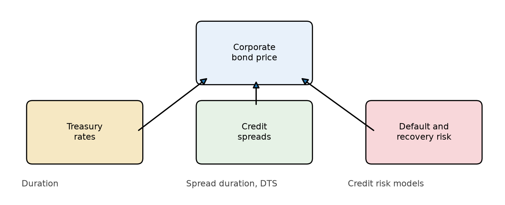
Lecture 10: Credit Spread Exposure and Credit Risk Modeling
Learning Objectives
After completing this lecture you should be able to:
- Measure changes in credit spreads using absolute changes and relative changes.
- Explain why relative spread changes often describe corporate spread behavior better than absolute spread changes.
- Define spread duration and use it to estimate the price effect of spread changes.
- Define duration times spread (DTS) and explain why it is useful for measuring credit spread exposure.
- Explain why analytical duration can overstate the true Treasury-rate exposure of lower-rated corporate bonds.
- Define empirical duration and describe how it is estimated.
- Explain the theoretical difference between analytical duration and empirical duration.
- Use duration multipliers to adjust corporate bond duration estimates.
- Explain why credit risk is harder to model than interest-rate risk.
- Compare credit ratings with credit risk models.
- Describe structural models, including the Black-Scholes-Merton model and its main extensions.
- Explain default correlation and why copulas are used in portfolio credit risk.
- Describe reduced-form models, including the Poisson process, Jarrow-Turnbull model, and Duffie-Singleton model.
- Compare the advantages and disadvantages of structural and reduced-form models.
- Interpret empirical evidence on credit ratings, structural models, and reduced-form models.
- Apply credit risk modeling to relative value analysis.
- Explain the motivation for incomplete-information models.
1 Big Picture: Two Credit Questions
Credit-risky bonds expose investors to two related but different questions:
- Spread exposure: If the market demands more or less compensation for credit risk, how much will the bond price move?
- Default exposure: What is the probability of default, what is the expected recovery, and how do defaults interact across a portfolio?
The first question is about mark-to-market risk. A corporate bond can lose value even if it never defaults because its credit spread widens. The second question is about credit events and losses. Both matter for portfolio construction.
For a plain corporate bond, a simple yield decomposition is:
\[ y_{\text{corp}} \approx y_{\text{Treasury}} + s, \]
where \(s\) is the credit spread. A price change can then come from a change in Treasury yields, a change in credit spreads, or both.
TipCore Intuition
Treasury duration tells us how much the bond reacts to risk-free rates. Spread duration and DTS tell us how much the bond reacts to the market’s compensation for credit risk. Credit risk models go one level deeper and ask where that compensation should come from.
2 Measuring Changes in Credit Spreads
The credit spread of a risky bond is the difference between the yield on the risky bond and the yield on a comparable Treasury security:
\[ s_i = y_i - y_{\text{Treasury}}. \]
There are two common ways to measure a spread change.
The absolute spread change is:
\[ \Delta s_i. \]
The relative spread change is:
\[ \frac{\Delta s_i}{s_i}. \]
The difference matters because a 25-basis-point widening does not mean the same thing for every bond.
NoteExample 1: Absolute Versus Relative Spread Changes
Suppose Bond A has a spread of 50 bps and Bond B has a spread of 500 bps.
If both spreads widen by 25 bps, the absolute change is the same:
\[ \Delta s_A = \Delta s_B = 25 \text{ bps}. \]
But the relative changes are very different:
\[ \frac{25}{50}=50\%, \qquad \frac{25}{500}=5\%. \]
For Bond A, the market has increased required credit compensation by half. For Bond B, the same 25 bps is a much smaller proportional shock.
If credit spread changes tend to be proportional to the starting spread level, then high-spread bonds should usually experience larger basis-point moves than tight-spread bonds. Empirical evidence supports this proportional view for corporate bonds. That is why relative spread changes are central to DTS.
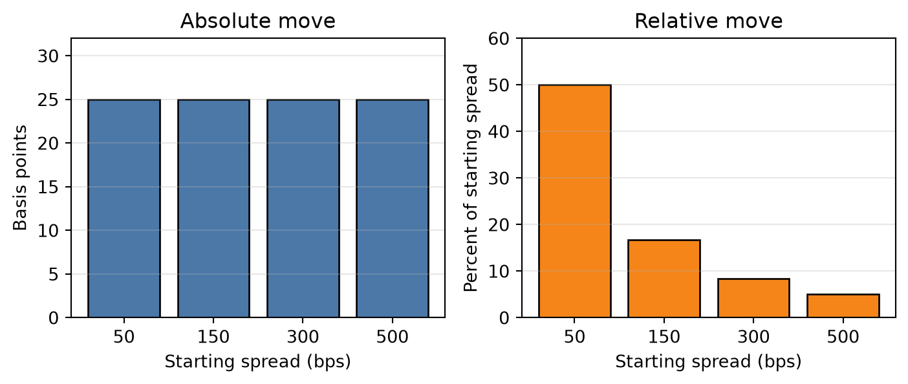
3 Measuring Credit Spread Sensitivity
Spread Duration
Spread duration measures the approximate percentage price change for a 100-basis-point parallel change in credit spreads, holding Treasury rates constant.
The approximate spread duration is:
\[ D_{\text{spread}} = \frac{P_- - P_+}{2P_0\Delta s}, \]
where:
- \(P_0\) is the initial price;
- \(P_-\) is the price after the spread decreases by \(\Delta s\);
- \(P_+\) is the price after the spread increases by \(\Delta s\).
For small spread moves:
\[ \frac{\Delta P_{\text{spread}}}{P} \approx -D_{\text{spread}}\Delta s. \]
The negative sign reflects the usual price-spread relationship. If spreads widen, prices fall.
NoteExample 2: Spread Duration Price Impact
Suppose a corporate bond has spread duration of 6.5. Its spread widens by 40 bps, or 0.0040.
The approximate percentage price change is:
\[ \frac{\Delta P}{P} \approx -6.5(0.0040) = -0.026 = -2.6\%. \]
If the bond was priced at 98, the approximate price decline is:
\[ 98 \times 2.6\% = 2.548 \]
points, so the new price is roughly 95.45.
Spread duration is useful, but it implicitly uses absolute spread changes. That is a limitation if high-spread bonds tend to have larger basis-point spread moves.
Duration Times Spread (DTS)
Duration times spread (DTS) is:
\[ \text{DTS} = D_{\text{spread}} \times s. \]
If \(s\) is expressed in decimal form, DTS is also a decimal. A bond with spread duration 4 and spread 90 bps has:
\[ \text{DTS} = 4 \times 0.0090 = 0.036 = 3.6\%. \]
The logic comes from rewriting the spread-price relation. Start with:
\[ \frac{\Delta P_{\text{spread}}}{P} \approx -D_{\text{spread}}\Delta s. \]
Multiply and divide by \(s\):
\[ \frac{\Delta P_{\text{spread}}}{P} \approx -(D_{\text{spread}}s)\frac{\Delta s}{s}. \]
The first term is DTS, and the second term is the relative spread change:
\[ \frac{\Delta P_{\text{spread}}}{P} \approx -\text{DTS}\times \frac{\Delta s}{s}. \]
TipDTS Is Intuition
Spread duration asks: “What happens if every bond’s spread moves by the same number of basis points?”
DTS asks: “What happens if every bond’s spread moves by the same percentage of its starting spread?”
The second question often fits corporate spread behavior better because distressed or high-yield bonds usually have wider and more volatile spreads.
NoteExample 3: DTS and Relative Spread Shocks
Bond A has spread duration 7 and spread 100 bps, or 0.0100:
\[ \text{DTS}_A = 7(0.0100)=0.0700. \]
Bond B has spread duration 3.5 and spread 400 bps, or 0.0400:
\[ \text{DTS}_B = 3.5(0.0400)=0.1400. \]
If spreads widen by 20% relative to their starting levels, then:
\[ \frac{\Delta s}{s}=0.20. \]
For Bond A:
\[ \frac{\Delta P_A}{P_A} \approx -0.0700(0.20) = -0.0140. \]
So Bond A loses approximately 1.40%.
For Bond B:
\[ \frac{\Delta P_B}{P_B} \approx -0.1400(0.20) = -0.0280. \]
So Bond B loses approximately 2.80%.
Bond B has shorter spread duration, but it has more credit spread risk because its starting spread is much wider.
For a portfolio, contribution to DTS is:
\[ \text{Contribution to DTS}_i = w_i D_{\text{spread},i}s_i. \]
This identifies where credit spread risk actually sits in the portfolio.
NoteExample 4: Portfolio DTS
Suppose a portfolio has three sectors.
| Sector | Weight | Spread duration | Spread | DTS | Contribution to DTS |
|---|---|---|---|---|---|
| A-rated industrials | 50% | 6.0 | 1.20% | 7.20% | 3.60% |
| BBB financials | 30% | 5.0 | 2.00% | 10.00% | 3.00% |
| High yield | 20% | 3.0 | 5.00% | 15.00% | 3.00% |
The high-yield allocation is only 20% of market value, but it contributes as much DTS as the 30% BBB allocation. Market weight alone understates its credit spread risk.
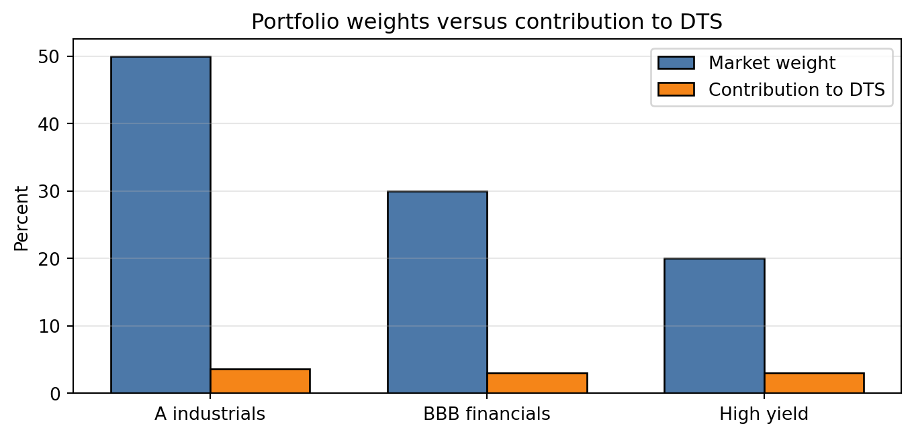
4 Empirical Duration for Corporate Bonds
Corporate bond price performance is driven by more than one risk factor. The main exposures are:
- Treasury-rate risk;
- credit spread risk;
- equity-like risk, especially for lower-rated issuers.
The relative importance of these risks depends on credit quality. For high-quality investment-grade bonds, the promised cash flows are more likely to be paid, so Treasury-rate risk is often the dominant driver of day-to-day price changes. If the 10-year Treasury yield rises, the price of a long-maturity A-rated corporate bond will usually fall in a way that looks similar to a Treasury bond with comparable duration.
For high-yield bonds, the story is different. The lower the issuer’s credit quality, the more investors focus on default probability, recovery value, refinancing risk, and the issuer’s business outlook. These risks are closer to equity risk than to pure interest-rate risk. This is why lower-rated high-yield bonds are often described as equity-like.
This distinction matters because the standard modified duration formula treats the bond as if its price response is mainly a discount-rate effect. That can be misleading for high-yield bonds. A high-yield bond may have an analytical duration of 5, but if its spread tightens when Treasury yields rise, or if its price is mainly driven by default and recovery expectations, its observed Treasury-rate sensitivity may be much lower.
Portfolio managers usually deal with this problem in one of two ways:
- use a rule of thumb to reduce analytical duration for lower-rated bonds;
- estimate empirical duration from historical price changes and Treasury yield changes.
For example, a manager might reduce a high-yield bond’s analytical duration by 75%. If the analytical duration is 5, the adjusted duration would be:
\[ 5 \times 0.25 = 1.25. \]
That adjustment is crude, but the intuition is right: lower-rated bonds often behave less like Treasuries and more like credit-risk assets.
Analytical Duration Versus Empirical Duration
Analytical duration is computed from the bond’s promised cash flows, price, yield, and maturity. It answers a mechanical repricing question: how would the price change if the discount yield changed while the cash flows remained promised?
Empirical duration is estimated from observed market behavior, commonly with a regression:
\[ \frac{\Delta P_t}{P_t} = \alpha - D_{\text{emp}}\Delta y_t + \epsilon_t. \]
The estimated slope gives an empirical measure of how the bond actually moved when Treasury yields changed.
For an investment-grade bond, the regression line is usually steeper because price changes are more sensitive to Treasury yield changes. For a high-yield bond, the regression line is often flatter because spread and equity-like credit effects absorb more of the price movement.
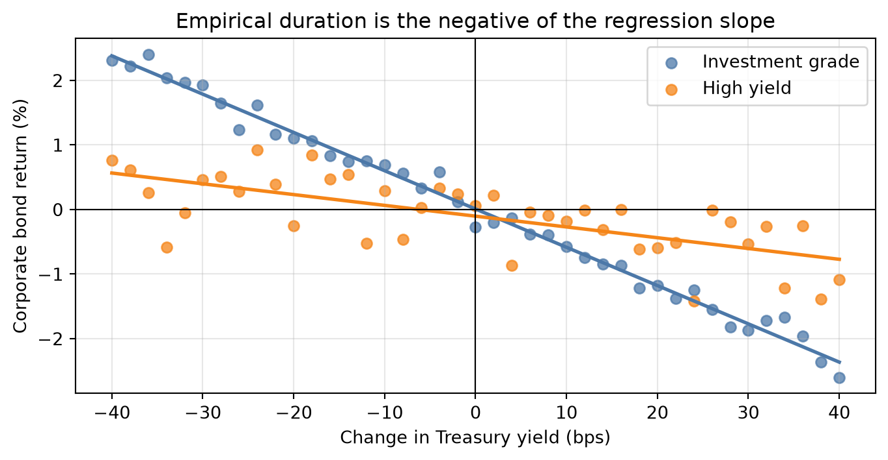
TipCore Intuition
Analytical duration treats the bond like a promised-cash-flow instrument. Empirical duration recognizes that corporate bond spreads may move at the same time Treasury yields move. For risky bonds, the spread response can offset or amplify the Treasury-rate effect.
Theoretical Difference Between Analytical Duration and Empirical Duration
A simple two-factor approximation is:
\[ \frac{\Delta P}{P} \approx -D\Delta y - D s \frac{\Delta s}{s}, \]
where \(D\) is modified duration, \(\Delta y\) is the Treasury yield change, \(s\) is the starting spread, and \(\Delta s/s\) is the relative spread change.
The first term,
\[ -D\Delta y, \]
is the usual Treasury-rate duration effect. If Treasury yields rise, the bond price falls.
The second term,
\[ -D s \frac{\Delta s}{s}, \]
is the credit spread effect written in DTS form. Since \(\text{DTS}=Ds\), the spread-price effect can also be written as:
\[ -\text{DTS}\times \frac{\Delta s}{s}. \]
So the two-factor approximation says that a corporate bond’s price changes because of both Treasury-rate changes and credit-spread changes.
To connect this to empirical duration, divide both sides by \(\Delta y\):
\[ \frac{1}{P}\frac{\Delta P}{\Delta y} \approx -D - Ds \frac{\Delta s/s}{\Delta y}. \]
Now factor out \(-D\):
\[ \frac{1}{P}\frac{\Delta P}{\Delta y} \approx -D \left[ 1 + s \frac{\Delta s/s}{\Delta y} \right]. \]
The key object is:
\[ \frac{\Delta s/s}{\Delta y}. \]
This measures how relative credit spread changes tend to move when Treasury yields change. Since that relationship is not known analytically, we estimate it empirically. The regression-style approximation is:
\[ \frac{\Delta s/s}{\Delta y} \approx \rho_{y,s}\frac{\sigma_s}{\sigma_y}. \]
This comes from the slope coefficient in a regression of relative spread changes on Treasury yield changes:
\[ \beta = \frac{\operatorname{cov}(\Delta y,\Delta s/s)} {\operatorname{var}(\Delta y)}. \]
Using
\[ \operatorname{cov}(\Delta y,\Delta s/s) = \rho_{y,s}\sigma_y\sigma_s \]
and
\[ \operatorname{var}(\Delta y)=\sigma_y^2, \]
we get:
\[ \beta = \frac{\rho_{y,s}\sigma_y\sigma_s}{\sigma_y^2} = \rho_{y,s}\frac{\sigma_s}{\sigma_y}. \]
Substituting this empirical relationship into the duration expression gives:
\[ \frac{1}{P}\frac{\Delta P}{\Delta y} \approx -D \left[ 1 + s\rho_{y,s}\frac{\sigma_s}{\sigma_y} \right], \]
where:
- \(\rho_{y,s}\) is the correlation between Treasury yield changes and relative spread changes;
- \(\sigma_s\) is the volatility of relative spread changes;
- \(\sigma_y\) is the volatility of Treasury yield changes.
The bracketed term is the duration adjustment.
If Treasury yields rise when credit spreads tighten, then \(\rho_{y,s}\) is negative. The bracketed term is less than 1, so empirical duration is lower than analytical duration. Intuitively, the Treasury-rate loss is partly offset by a gain from spread tightening.
If Treasury yields rise when credit spreads widen, then \(\rho_{y,s}\) is positive. The bracketed term is greater than 1, so empirical duration is higher than analytical duration. In that case, the Treasury-rate loss and spread-widening loss reinforce each other.
NoteExample 5: Analytical Duration versus Empirical Duration
Suppose a corporate bond has:
- analytical duration \(D=6.0\);
- starting credit spread \(s=3.00\%=0.0300\);
- correlation between Treasury yield changes and relative spread changes \(\rho_{y,s}=-0.50\);
- volatility of relative spread changes \(\sigma_s=2.00\%=0.0200\);
- volatility of Treasury yield changes \(\sigma_y=0.20\%=0.0020\).
The duration adjustment is:
\[ 1 + s\rho_{y,s}\frac{\sigma_s}{\sigma_y} = 1 + (0.0300)(-0.50)\frac{0.0200}{0.0020}. \]
Since
\[ \frac{0.0200}{0.0020}=10, \]
the adjustment becomes:
\[ 1 + (0.0300)(-0.50)(10) = 1 - 0.1500 = 0.8500. \]
So the empirical duration estimate is:
\[ D_{\text{emp}} = 6.0(0.8500) = 5.10. \]
If Treasury yields rise by 50 bps, or 0.0050, the predicted relative price change is:
\[ \frac{\Delta P}{P} \approx -5.10(0.0050) = -0.0255. \]
So the bond price is expected to decline by about 2.55%, not the 3.00% decline implied by the analytical duration alone.
NoteExample 6: Why Empirical Duration Can Be Lower
Suppose a bond has analytical duration 6 and spread 3%. A 50 bps rise in Treasury yields would mechanically imply:
\[ \frac{\Delta P}{P}\approx -6(0.0050)=-3.0\%. \]
But suppose the stronger economic environment also causes the bond’s spread to tighten by 30 bps:
\[ \frac{\Delta P_{\text{spread}}}{P}\approx -6(-0.0030)=+1.8\%. \]
The combined price change is:
\[ -3.0\% + 1.8\% = -1.2\%. \]
Relative to the 50 bps Treasury move, the observed duration is:
\[ \frac{1.2\%}{0.50\%}=2.4, \]
not 6. The bond did not become short maturity. Its credit spread moved in the opposite direction and offset much of the rate effect.
Duration Multipliers
A duration multiplier adjusts analytical duration to approximate true Treasury-rate sensitivity:
\[ D_{\text{emp}} \approx M D_{\text{analytical}}. \]
Empirical work often models the multiplier as a function of rating and spread:
\[ M = a + bs. \]
Lower-rated and wider-spread bonds tend to have lower multipliers. In stressed or high-yield cases, the multiplier can be near zero or even negative if spread tightening during rate increases more than offsets the Treasury-rate price effect.
TipEstimating Duration Multipliers
Duration multipliers are usually estimated in two steps.
First, estimate empirical duration from bond price changes and Treasury yield changes:
\[ \frac{\Delta P_t}{P_t} = \alpha - D_{\text{emp}}\Delta y_t + \epsilon_t. \]
Then compare empirical duration with analytical duration:
\[ M_i = \frac{D_{\text{emp},i}}{D_{\text{analytical},i}}. \]
After estimating \(M_i\) for many bonds or rating/spread groups, researchers often regress the multiplier on a constant and the bond’s spread:
\[ M_i = a + bs_i + u_i. \]
The intercept \(a\) is the baseline multiplier for that rating group. The slope \(b\) shows how the multiplier changes as spreads widen. Usually \(b<0\), meaning wider-spread bonds tend to have lower Treasury-rate sensitivity.
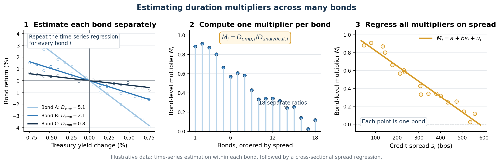
NoteExample 7: Using a Duration Multiplier
Suppose a portfolio manager holds $10 million of a B-rated bond. The bond has analytical duration of 5.0, but the estimated duration multiplier for bonds with its rating and spread is 0.25. The manager wants to estimate the bond’s response to a 75 bps increase in Treasury yields.
First, adjust the analytical duration:
\[ D_{\text{adjusted}} = 0.25(5.0)=1.25. \]
Using analytical duration alone, the estimated price change would be:
\[ \frac{\Delta P}{P} \approx -5.0(0.0075) =-3.75\%. \]
This implies a dollar loss of:
\[ 10{,}000{,}000(0.0375)=\$375{,}000. \]
Using the duration multiplier, the estimated Treasury-rate effect is instead:
\[ \frac{\Delta P}{P} \approx -1.25(0.0075) =-0.9375\%. \]
The corresponding dollar loss is:
\[ 10{,}000{,}000(0.009375)=\$93{,}750. \]
The multiplier reduces the estimated Treasury-rate exposure from $375,000 to $93,750. The difference reflects the historical tendency of the bond’s spread movement to offset part of its analytical rate sensitivity. This is the adjusted exposure the manager would use when sizing a Treasury hedge, before allowing for additional idiosyncratic credit movement.
The implication for portfolio management is important. If a manager uses analytical duration for high-yield bonds without adjustment, the portfolio’s reported rate exposure may be too high. Hedging based on that duration can create an unintended rate bet.
NoteExample 8: Portfolio Duration Misstatement
A portfolio manager targets duration of 5.5 and allocates 15% to high-yield bonds with analytical duration 5.0. The remaining 85% has duration 5.8.
Using analytical duration:
\[ 0.85(5.8)+0.15(5.0)=5.68. \]
This appears above the 5.5 target.
If the high-yield duration multiplier is 0.25, true high-yield duration is:
\[ 0.25(5.0)=1.25. \]
The true portfolio duration is:
\[ 0.85(5.8)+0.15(1.25)=5.12. \]
The portfolio is actually below the target. A hedge based on analytical duration would move the portfolio in the wrong direction.
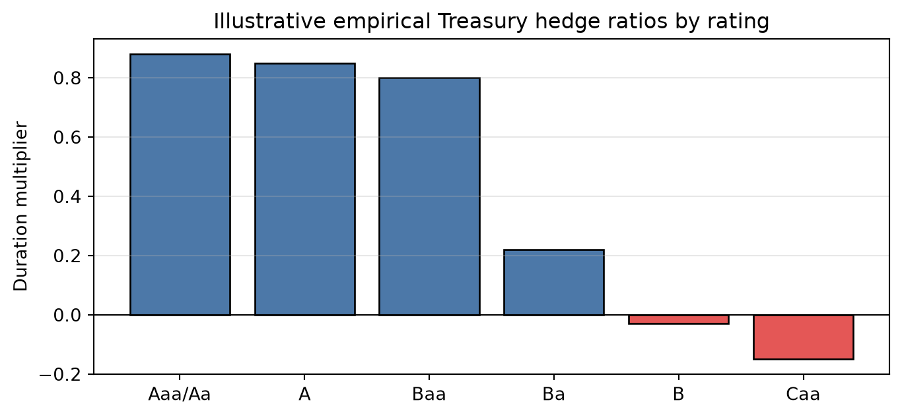
5 Difficulties in Credit Risk Modeling
Credit risk is harder to model than interest-rate risk for several reasons.
First, default is a rare event. Treasury yields are observed every trading day. Defaults, especially for investment-grade issuers, occur infrequently. This means there is less data for estimating default probabilities and recoveries.
Second, issuers are heterogeneous. Companies differ by industry, leverage, size, asset quality, management, accounting choices, legal jurisdiction, and financing structure. Two firms with the same rating may have different risk profiles.
Third, defaults have many causes. A default may be driven by poor management, excess leverage, fraud, commodity prices, litigation, recession, high interest rates, or a liquidity shock. A model that works well in one default cycle may not work as well in another.
Fourth, recovery is uncertain. Even after default, the final loss depends on bankruptcy law, collateral, seniority, restructuring negotiations, and market conditions.
TipModeling Implication
Interest-rate modeling is usually about a liquid, frequently observed market variable. Credit modeling is about a rare event whose probability depends on balance sheets, market prices, legal rules, and macroeconomic states.
6 Overview of Credit Risk Modeling
Credit risk models are used for three related tasks:
- Estimating default probabilities.
- Pricing credit-risky bonds and credit derivatives.
- Measuring portfolio credit risk.
A default probability is the likelihood that a borrower defaults over a specified horizon. Models may produce a one-year default probability, a five-year default probability, or an entire term structure of default probabilities.
Pricing requires more than default probability. A model also needs:
- recovery assumptions;
- a risk-free term structure;
- compensation for systematic credit risk, liquidity risk, and uncertainty about default timing.
Portfolio credit risk requires a dependence model. A portfolio of 100 bonds is not just 100 independent default probabilities. If defaults cluster in recessions, portfolio loss risk can be much larger than an independence assumption would imply.
NoteExample 9: Expected Loss Is Only a Starting Point
Suppose a one-year bond has:
- probability of default \(PD=2\%\);
- loss given default \(LGD=60\%\).
The expected credit loss is:
\[ EL = PD \times LGD = 2\% \times 60\% = 1.2\%. \]
If the risk-free yield is 4%, a naive expected-loss spread might be about 120 bps. But market spreads also include risk premiums, liquidity premiums, taxes, and compensation for uncertainty. A 120 bps expected loss does not mean the fair market spread must equal 120 bps.
7 Credit Ratings versus Credit Risk Models
Credit ratings summarize an agency’s opinion of credit quality. They are useful, but they are not the same as model-implied default probabilities.
| Feature | Credit ratings | Credit risk models |
|---|---|---|
| Scale | Discrete grades | Continuous probabilities |
| Update frequency | Infrequent | Can update daily or intraday |
| Horizon | Often broad short-term or long-term view | Can produce maturity-specific default probabilities |
| Inputs | Fundamental review and agency judgment | Market data, accounting data, macro variables, model assumptions |
| Strength | Stable, widely understood benchmark | Timely, granular, useful for pricing and risk |
| Weakness | Slow-moving and coarse | Model risk and calibration risk |
Ratings still matter because many investors, mandates, indexes, and regulations use them. Models matter because market risk can change faster than ratings.
TipPractical View
Ratings are labels. Models are measurement systems. A good credit process usually compares both rather than treating either one as sufficient.
8 Structural Models
Structural models explain default using the firm’s balance sheet. The central idea is simple:
Default occurs when the value of the firm’s assets is too low relative to its debt obligations.
In these models, default is endogenous. It comes from the modeled value of the firm, leverage, volatility, and a default threshold.
Fundamentals of the Black-Scholes-Merton Model
The Black-Scholes-Merton (BSM) framework views corporate debt and equity through option-pricing logic.
Assume:
- the firm has assets worth \(A(t)\);
- it has one zero-coupon debt issue with face value \(K\) due at time \(T\);
- equity holders decide at maturity whether to repay debt or default.
The key default rule is:
\[ \text{default at } T \quad \text{if} \quad A(T)<K. \]
If assets are worth more than the promised debt payment, equity holders repay the debt and keep the residual firm value. If assets are worth less than the promised debt payment, equity holders walk away. Bondholders receive the firm assets, which are worth less than the promised amount.
This gives the model a direct default-probability interpretation:
\[ PD = \Pr[A(T)<K]. \]
The model assumes asset value follows a stochastic process, commonly a lognormal process. Therefore, default risk comes from the probability that the future asset-value distribution ends below the debt threshold \(K\).
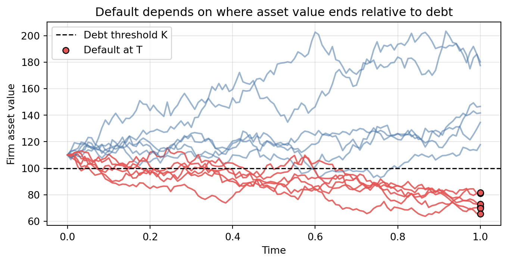
At maturity:
\[ E(T)=\max[A(T)-K,0]. \]
Equity is a call option on the firm’s assets with strike price \(K\).
Debt value at maturity can be written as:
\[ B(T)=A(T)-\max[A(T)-K,0]. \]
It can also be written as:
\[ B(T)=K-\max[K-A(T),0]. \]
This says risky debt is equivalent to a risk-free bond minus a put option on the firm’s assets. The put represents default risk.
NoteExample 10: BSM Payoffs at Maturity
Suppose debt face value is \(K=100\).
| Asset value at maturity | Equity payoff | Debt payoff |
|---|---|---|
| 140 | 40 | 100 |
| 100 | 0 | 100 |
| 70 | 0 | 70 |
When assets exceed debt, equity holders repay bondholders and keep the residual. When assets are below debt, equity holders default and hand the firm to bondholders.
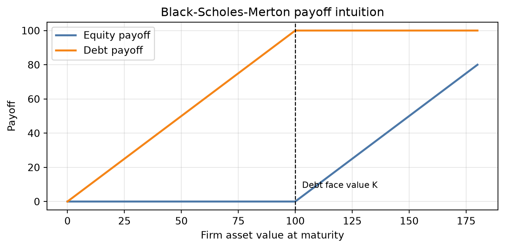
The model’s main implications follow from the default condition \(A(T)<K\):
Higher leverage increases default probability. If the firm has more debt relative to assets, then \(K\) is high relative to \(A(0)\). The firm starts closer to the default threshold, so it takes a smaller decline in asset value for \(A(T)\) to fall below \(K\).
Higher asset volatility increases default probability. Volatility widens the distribution of possible future asset values. Even if \(A(0)>K\), more volatility puts more probability mass in the left tail below \(K\). This is why a riskier business or more volatile asset base usually implies wider credit spreads.
More time to maturity changes the option value of both equity and debt. More time gives asset value more opportunity to move. That can make the equity call option more valuable, but it also gives bondholders more exposure to adverse asset-value outcomes. The effect on default probability and spreads depends on leverage, volatility, expected asset growth, and recovery assumptions.
Credit spreads are linked to equity prices and asset volatility. Equity and debt are claims on the same firm assets. If the stock price falls, the inferred firm value is usually lower, so the firm is closer to default. If equity volatility rises, inferred asset volatility is usually higher, so the left-tail probability of default rises. Both effects tend to widen credit spreads.
TipStructural Model Intuition
The BSM model does not treat default as an unexplained event. It links default risk to the firm’s capital structure: asset value, debt face value, asset volatility, and time to maturity.
Advantages and Disadvantages of Structural Models
Structural models have clear economic intuition. They link credit risk to leverage, asset value, and asset volatility. They can help analysts understand how new borrowing, equity issuance, or asset volatility changes affect default risk.
They also have practical weaknesses:
- firm asset value is not directly observable;
- asset volatility must be inferred;
- complex capital structures are difficult to model;
- default barriers are hard to estimate;
- calibration can be slow and unstable;
- the basic model can understate short-term default risk because default occurs only at debt maturity.
TipStructural Model Tradeoff
Structural models explain why default happens, but that explanation requires inputs that are often unobservable. The model is economically rich but operationally demanding.
9 Reduced-Form Models
Reduced-form models treat default as an exogenous event. They do not model the firm’s assets and debt structure in detail. Instead, they model the timing of default directly.
The key inputs are:
- default time;
- recovery process;
- risk-free interest-rate process.
In reduced-form models, default is usually modeled with an intensity or hazard rate. This makes them attractive for pricing because they can be calibrated to observed bond or credit derivative prices.
Poisson Process
A Poisson process counts events over time. Let \(N_t\) be the number of events from time \(0\) to time \(t\).
For a small interval \(dt\):
\[ \Pr(N_{t+dt}-N_t = 1) = \lambda dt, \]
\[ \Pr(N_{t+dt}-N_t = 0) = 1-\lambda dt. \]
In credit modeling, the event is default and \(\lambda\) is the default intensity. It is the conditional default probability per unit of time, given survival so far. We use \(\tau\) to denote the random default time, meaning the time at which the issuer defaults.
If \(\lambda\) is constant, the survival probability to time \(T\) is:
\[ \Pr(\tau > T) = e^{-\lambda T}, \]
and the cumulative default probability is:
\[ \Pr(\tau \le T)=1-e^{-\lambda T}. \]
The intensity controls both the center and the shape of the event-count distribution. Over one unit of time, \(N_1\sim\operatorname{Poisson}(\lambda)\), so both its mean and variance equal \(\lambda\). At low intensity, most probability is concentrated near zero and the distribution is strongly right-skewed. As intensity rises, the distribution shifts to the right, spreads out, and becomes more symmetric.
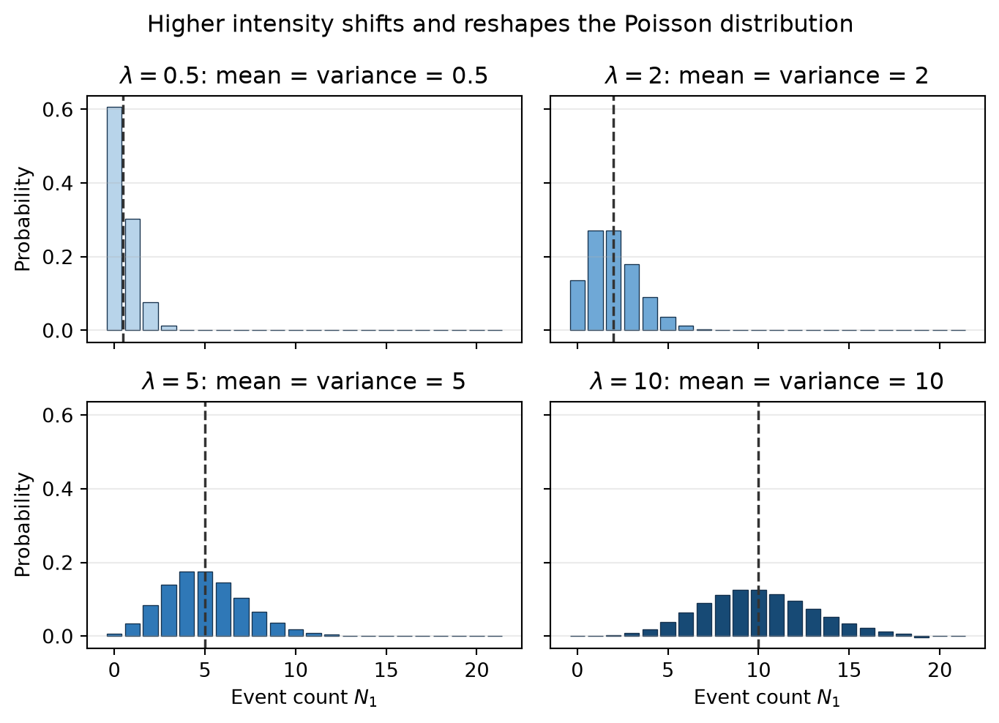
A simulated path shows the same idea dynamically. Higher intensity produces more arrivals per unit of time, so the cumulative count tends to grow faster. The paths are random, however, so their short-run slopes are uneven and need not be ordered at every instant.
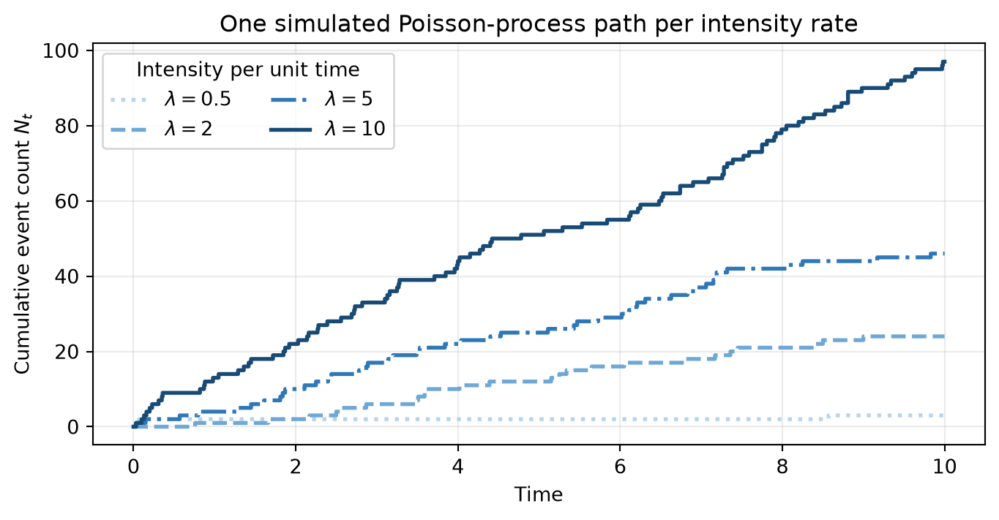
NoteExample 12: Default Intensity
Suppose the annual default intensity is 2%, so \(\lambda=0.02\).
The five-year survival probability is:
\[ e^{-0.02(5)}=e^{-0.10}=90.48\%. \]
The five-year default probability is:
\[ 1-90.48\%=9.52\%. \]
The result is not exactly \(2\%\times 5=10\%\) because survival probabilities compound continuously.
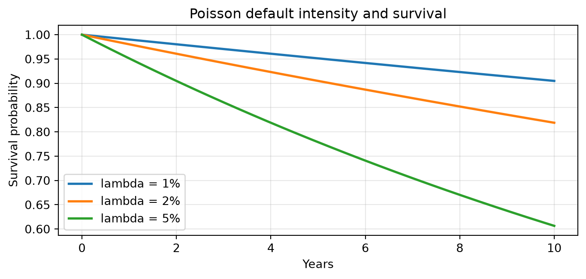
Advantages and Disadvantages of Reduced-Form Models
Reduced-form models are attractive because they can be calibrated quickly to market prices. Traders can infer a default probability curve and credit spread curve from risky zero-coupon bonds, corporate bonds, or credit derivatives.
The main weakness is that default is treated as a surprise event generated by the model rather than as the result of an explicit balance-sheet process. This makes the model less explanatory.
| Issue | Structural models | Reduced-form models |
|---|---|---|
| Default driver | Firm value relative to debt | Exogenous default intensity |
| Main strength | Economic explanation | Market calibration and pricing |
| Main weakness | Hard inputs and calibration | Less economic explanation |
| Common use | Credit analysis, capital structure insight | Trading, pricing, credit derivatives |
TipReduced-Form Model Tradeoff
Reduced-form models are often easier to fit to market prices, but they explain less about why the issuer defaults. They are strong pricing tools and weaker economic stories.
10 Estimating Portfolio Credit Risk: Default Correlation and Copulas
A credit portfolio needs more than individual default probabilities. It needs a model of default dependence.
If all defaults were independent, diversification would be powerful. In reality, defaults cluster because issuers share macroeconomic, industry, funding, and market-liquidity risks.
The usual correlation measure is not always enough. Correlation captures one kind of linear dependence, but credit losses are often asymmetric and concentrated in the tails. A supplier may be highly exposed to automaker defaults, while automaker defaults may be almost unaffected by that supplier.
A copula combines:
- each issuer’s marginal default distribution;
- a dependence structure across issuers.
The goal is to model joint default behavior, especially in stress scenarios.
TipCopula Intuition
A copula is a way to join separate default probability models into one portfolio model. The marginal distributions say how likely each issuer is to default on its own; the copula says how likely those defaults are to happen together.
NoteExample 11: Why Dependence Matters
Consider a portfolio with 100 equal-sized bonds. Each issuer has one-year default probability of 2%, and loss given default is 60%.
Expected defaults are:
\[ 100 \times 2\% = 2. \]
Expected loss is:
\[ 2 \times 60\% \times 1\% = 1.2\% \]
of portfolio value.
But expected loss does not describe tail loss. If defaults are independent, 10 defaults is unlikely. If defaults are strongly linked to a recession factor, 10 or more defaults becomes much more plausible. Portfolio credit risk is mainly about this clustering.
11 Empirical Evidence: Credit Ratings, Structural Models, and Reduced-Form Models
Empirical studies generally support three practical conclusions.
First, credit ratings contain useful information, but they are coarse and slow-moving. They do not fully capture default probability.
Second, structural models capture important economic drivers of distress, especially leverage, market value, and volatility. However, simple implementations may not forecast default as well as reduced-form approaches that use richer public information.
Third, reduced-form models often perform well in prediction and pricing because they can incorporate timely market and accounting information. Their performance depends heavily on specification, calibration, and the data used.
The implication is not that one model is always best. Credit risk is multidimensional. Ratings, structural variables, market spreads, equity prices, balance-sheet data, and macro variables can each contain different information.
12 An Application of Credit Risk Modeling
One practical use of credit risk modeling is relative value analysis. The question is:
How much spread compensation does this bond offer per unit of default risk?
A simple metric is:
\[ \text{Spread-to-default-probability ratio} = \frac{\text{Credit spread}}{\text{Maturity-matched default probability}}. \]
Higher ratios indicate more spread compensation per unit of modeled default probability, all else equal.
NoteExample 13: Spread Compensation per Unit of Default Risk
Consider two bonds from similar issuers.
| Bond | Credit spread | Five-year default probability | Spread / default probability |
|---|---|---|---|
| Bond A | 120 bps | 2.0% | 60 |
| Bond B | 180 bps | 6.0% | 30 |
Bond B has a wider spread, but Bond A offers more spread per unit of modeled default probability.
This does not automatically make Bond A better. Liquidity, recovery, covenants, seniority, tax treatment, and model error still matter.
The value of this approach is discipline. It prevents the analyst from treating a wide spread as attractive without asking whether the spread is wide enough for the credit risk.
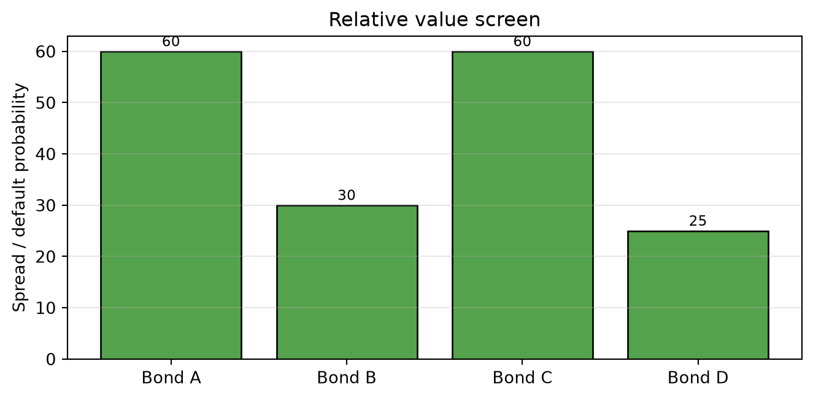
13 Using Credit Risk Models in Practice
In practice, reduced-form credit models are often used as pricing models. The analyst chooses a default intensity, or hazard rate, so that the model matches observed market prices. Once calibrated, the same model can price other bonds, loans, credit default swaps, and structured credit positions.
The basic workflow is:
- Observe market prices or spreads for traded credit instruments.
- Assume a recovery rate or recovery process.
- Calibrate a term structure of hazard rates \(\lambda(t)\) so model prices match market prices.
- Use the calibrated hazard rates to price less liquid bonds or credit derivatives.
For a simple risky zero-coupon bond with recovery ignored, the risky discount factor can be written approximately as:
\[ P_{\text{risky}}(0,T) \approx \exp\left[-\int_0^T (r(t)+\lambda(t))dt\right]. \]
The hazard rate acts like an additional discount rate for default risk. Higher observed credit spreads usually imply higher calibrated hazard rates.
TipCalibration Intuition
In pricing, the hazard rate is not guessed from historical defaults alone. It is usually chosen so the model reproduces observed bond prices or CDS spreads. The calibrated hazard rate is therefore a market-implied, risk-neutral object.
Factor-Driven Hazard Rates
Hazard rates do not need to be constant. They can depend on issuer, market, and macro variables. Let \(X_t\) denote a vector of external risk factors, such as leverage, equity volatility, credit spreads, rating, unemployment, or sector conditions.
A general intensity model is:
\[ \lambda(t \mid X_t) = g(\beta_0+\beta^\top X_t), \]
where \(g(\cdot)\) is a link function that maps the linear score into a valid hazard rate.
The link function matters because a hazard rate must be nonnegative. A purely linear specification,
\[ \lambda(t \mid X_t)=\beta_0+\beta^\top X_t, \]
is easy to interpret, but it can produce negative intensities, which are not economically meaningful. For this reason, models often use a positive link function such as:
\[ \lambda(t \mid X_t)=\exp(\beta_0+\beta^\top X_t). \]
Other positive links, such as softplus functions, can also be used.
NoteIs a Linear Factor Model Arbitrage-Free?
A factor-driven intensity model can be arbitrage-free if it is specified under the risk-neutral measure, keeps \(\lambda(t)\ge 0\), and prices securities by discounted expected cash flows with default and recovery handled consistently.
A naive linear hazard model is not automatically arbitrage-free because it can generate negative default intensities or prices inconsistent with traded instruments. Reduced-form models are useful because they provide a pricing framework where default intensities, recovery assumptions, and discounting can be calibrated consistently to market prices.
Physical versus Risk-Neutral Default Probabilities
There are two different default probabilities in practice.
A physical default probability estimates the real-world likelihood of default. It is used for forecasting, expected loss, credit limits, loan underwriting, stress testing, and capital planning.
A risk-neutral default probability is implied by market prices. It is used for pricing bonds and credit derivatives.
They differ because market spreads include more than expected default loss. Investors require compensation for systematic credit risk, liquidity risk, uncertainty about recovery, and the fact that defaults tend to occur in bad economic states.
Physical default probabilities are estimated from real-world default experience and issuer information. Common inputs include:
- historical default and rating transition data;
- balance-sheet ratios such as leverage, profitability, liquidity, and interest coverage;
- market variables such as equity returns, equity volatility, bond spreads, and CDS spreads;
- macro variables such as unemployment, rates, GDP growth, inflation, and credit conditions;
- sector variables such as commodity prices, industry leverage, and refinancing conditions.
Common statistical tools include logistic regression, survival models, transition matrices, and panel models. These models ask: given what we know about the issuer and the economy, how likely is default over the next year, three years, or five years?
NoteExample 14: Physical versus Risk-Neutral PD
Suppose a historical default model estimates a one-year physical default probability of 1.0%. With 40% recovery, expected loss is:
\[ 1.0\% \times (1-40\%) = 0.60\%. \]
But the market spread may be 150 bps, not 60 bps. The difference reflects risk premiums, liquidity, recovery uncertainty, taxes, and supply-demand conditions.
A model calibrated to the 150 bps spread may imply a higher risk-neutral default probability than the physical default probability.
The practical rule is:
- use physical PDs when asking, “How likely is default?”
- use risk-neutral PDs when asking, “What price or spread is consistent with the market?”
Key Points
- Credit-risky bonds should be analyzed using both Treasury-rate exposure and credit spread exposure.
- Spread changes can be measured as absolute basis-point changes or relative percentage changes.
- Empirical evidence supports relative spread changes as a useful description of corporate spread behavior.
- Spread duration measures price sensitivity to a parallel spread shift.
- DTS equals spread duration times spread and often gives a better measure of credit spread exposure than spread duration alone.
- Contribution to portfolio DTS helps identify where credit spread risk is concentrated.
- Analytical duration can overstate the true Treasury-rate sensitivity of lower-rated corporate bonds.
- Empirical duration is estimated from observed bond price changes and Treasury yield changes.
- Duration multipliers adjust analytical duration to reflect empirical Treasury-rate sensitivity.
- Credit risk is difficult to model because defaults are rare, issuers are heterogeneous, recovery is uncertain, and defaults cluster in stress periods.
- Credit ratings are useful but discrete, slow-moving, and not maturity-specific default probability models.
- Structural models explain default through firm value, leverage, volatility, and a default threshold.
- In the BSM model, equity is a call option on firm assets and risky debt is a risk-free bond minus a default put.
- Structural models are economically intuitive but hard to calibrate.
- Reduced-form models treat default as an exogenous intensity process and are often easier to calibrate to market prices.
- The Poisson process provides the basic default-arrival logic for many reduced-form models.
- Jarrow-Turnbull and Duffie-Singleton models differ mainly in recovery timing and recovery specification.
- Portfolio credit risk requires modeling default dependence, not just individual default probabilities.
- Copulas combine marginal default distributions with a dependence structure.
- Incomplete-information models account for the fact that investors may not know the issuer’s true economic condition or default barrier.
Suggested Readings
Fabozzi, Bond Markets: Analysis and Strategies, Chapter 21, 23.